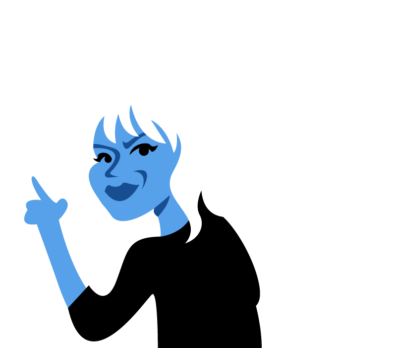
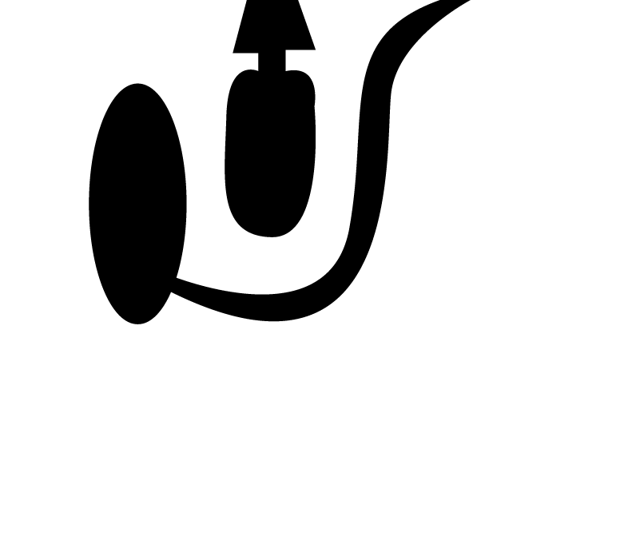

1991
Courtney Love: Pretty on the Inside
With the success of Nirvana, grunge music was starting to influence all mainstream platforms by the early 1990s. Courtney Love, a notorious rock scenester in the 80s, and her ex-boyfriend Erik Erlandson took this new Gen-X wave of music as their opportunity to start a band and become rock stars themselves. Already heavily in the world of grunge music, they found it easy to find their sound and record their first album, Pretty on the Inside.
Courtney supported the band early on by stripping, which also served as inspiration for some of the album’s content.
Hole created a grunge sound that was raw and angry, but maintained the sadness and rhythm that the genre would become known for. Love’s agression during recording forced everyone in the band to split—except Erlandson. Despite this, the album was an underground success.

1992
John and Yoko Or Sid and Nancy?
When Courtney met Kurt Cobain, the lead singer of Nirvana, they got on like “a house on fire,” according to Love. They both came from broken families and wanted to pusue their own family to makae up for that fact, they were also both deeply addicted to heroin.
Kurt and Courtney were married on February 24, 1992 in Hawaii; Love was 2 months pregnant at the time, and both were still using heroin regularly.
The couple was crowned the king and queen of grunge music, but the verdict was still out as to if their romance would cause the destructions of their bands, like John and Yoko, or the destructions of each other, like Sid and Nancy. Their daughter, Frances Bean, was born the summer after their marriage; finally bringing the couple their longed for family; but, their drug use was spiraling out of control.

1993
A New Album
After a Vanity Fair article about Love and Cobain was printed, claiming that the couple used heroin during their pregnancy and around Frances Bean after she was born, child services stepped in and took the baby away until they were able to sober up and regain custody. The situation led to anger from Cobain and Love who began to try and change the topic of discussion from their drug use to their music.
Hole began developing their second album. It would be a continuation of Love’s interest in vanity and motherhood.
Nirvana released their follow-up to Nevermind, In Utero, just as Hole started making their follow-up album. In Utero was a major success, but dealt with many of the same topics as Love was developing for Hole’s album; this similarity in tone and melody would spark rumors that Kurt was ghostwriting for his wife.
1993
Overexposed
With their daughter returned and their fame on the rise, Kurt and Courtney should have been enjoying their success; but, their drug use was beginning to consume them. While Courtney had lessened her heroin usage, Kurt had become a full-out junkie and his shame and depression was growing larger.
Cobain overdosed on pills after a concert in Rome, putting him in a temporary coma. This event also put him in rehab.
Unable to persuade Kurt to slow down on the drugs, Courtney called for an intervention; but, the situation only further isolated Kurt from those around him as he began to abuse the drug further. Courtney, who was still using drugs herself, began to feel the stress of the situation and started lashing out at Kurt and those around her. She turned to her upcoming album to distract her.
1994
Tragedy Strikes
Courtney, busy working on the final touches to her album in Los Angeles, enlisted the help of a private detective to locate Kurt—who had been missing for a few days. But before the detective had the chance to locate him, Kurt was found dead in thier home in Seattle.
Kurt Cobain killed himself on April 5, 1994 with a shotgun after taking a lethal dose of heroin.
The members of Nirvana and Kurt’s friends gathered together to morn that day, but Love went on a days long drug-binge instead. In a haze, she made very public appearances to read Kurt’s suicide note and to give away some of his clothes to fans. This strange behavior, as well as a few inconsistencies with Kurt’s note, led to a rumor that still follows Love—that she had Kurt killed, and forged the note in order to serve as her alibi.
1994
Live Through This: The Album
Hole’s second album was finally released on April 12th, 1994—only one week after Kurt’s suicide. Despite the fact that Love was unable to promote the record during this time, it wasa big commercial and critical success. Rolling Stone Magazine even declared it “Album of the Year.” The track list inluded:
1. Violet
2. Miss World
3. Plump
4. Asking For it
5. Jennifer’s Body
6. Doll Parts
7. Credit in the Straight World
8. Softer, Softest
9. She Walks on Me
10. I Think That I would Die
11. Gutless
12. Rock Star
Live Through This was a much more polished and melodic record, but with the passion and anger of Pretty on the Inside. Singles such as “Miss World” and “Asking For It” dealt with Love’s obsession with beauty and her poor public perception; whereas, “Doll Parts” and “Softer, Softest” tackle issues of Love’s relationship with Kurt and motherhood. To many, it is the last great grunge record.
1994
Weeping Widow
After a brief period of mourning, Courtney Love and Hole were on the road to promote Live Through This. Love’s drug addiction was becoming an issue though and her behavior more sporatic. She surrounded herself with friends who also used heroin, like her old scenester girlfriend Jennifer Finch. The other members of Hole were also using drugs to a heightened extent, which led to more tragedy.
Hole Bassist, Kristen Pfaff, overdosed on heroin just months after Kurt Cobain. She was found by fellow Hole memember, Erik Erlandson.
The band took a second hiatus from promoting their album to mourn and replace Pfaff; they eventually had bassist Melissa Auf der Maur step into the role. Shaken, the band prepared for thier uncoming tour.
1995
Tour Turmoil
By the time Lollapalooza ‘95 came around, Live Through This had become a major hit and Hole was set to perform as a headliner. With the success, came a lot of hate directed at Courtney Love for seemingly using her late-husband’s fame to launch her own band into more mainstream platforms. Along wiht those who enjoyed the music, some in the crowd of thousdands booed Love and held signs in the memory of Kurt Cobain.
Courtney responded to this crowd by cursing them, flipping them off, dropping her guitar, and jumping into the crowd.
It was obvious Love was still heavily using, but the drugs were not sedating her in any way. She was violent, she screamed during live performances, broke guitars—she was unhinged. She continued to dangerously stage dive despite the fact that she was often assulted by fans.
1996
Courtney Love:
New and Improved
After wrapping up their tour, Hole decided an extened break was in order. Courtney decided to concentrate her efforts for a while into acting, as the rock star lifestyle was becoming too dangerous for her. She accepted a leading role in “The People vs. Larry Flynt,” on the condition that she quit using heroin.
Love sobered up and put her enery into her acting, which landed her a Golden Globe nomination for her efforts.
Along with her critical success and a promising career in Hollywood, Courtney had surrounded herself with more A-list, respected friends: she became good friends with Drew Barrymore, who became the godmother to Frances Bean, and she began dating Edward Norton, who co-stared along side her in “The People vs. Larry Flynt.” But it wasn’t long before Love turned back to her rock roots.
1998
Celebrity Skin
Four years after the release of Live Through This and the death of Kurt Cobain, Hole finally put out a third record—Celebrity Skin. The album would have a much more pop-punk sound and deal with the loss of Love’s husband, her breakup with Ed Norton, and the alienation she felt as an outsider in the movie business.
The album was a critical and commercial success, but Hole had traded in its raw and angry sound for a more sad tone.
Courtney was maintaining her sobriety, but that was much harder to do in the circle of rock musicians she had rejoined. Celebrity Skin also casued some controversy after Billy Corgan, lead singer of the Smashing Pumpkins and one of Love’s exes, claimed to have co-written much of the album; Love denied these claims, giving Corgan only partial credit for the title song. Despite their success, the other memeber of Hole were finding it much harder this tour to live in the shadow of Courtney Love’s celebrity.
2002
Epilogue:
Hole’s Break Up
Hole officially broke up in 2002, with co-creators Love and Erlandson citing creative differences as the main reason. Love took the breakup of her band as a chance to begin a solo career in music, but it would prove harder than she though. After years sober, Love relaspsed and started on a downward spiral.
Courtney began using cocain on a regular basis and found herself arrested on multiple occassions.
Love’s solo record, America’s Sweetheart, was a flop whcih only increased her drug habits. In 2009 Courtney was forced to give primary custody of daughter Frances Bean to Kurt’s mother and sister. In 2010, Courtney attempted to revive Hole, with entirely different memebers, witht he album Nobody’s Daughter—which also flopped. As of 2017, Courtney Love has sobered up again and reconciled with those she alienated durign the past 20 years; she has not released any music in nearly a decade.